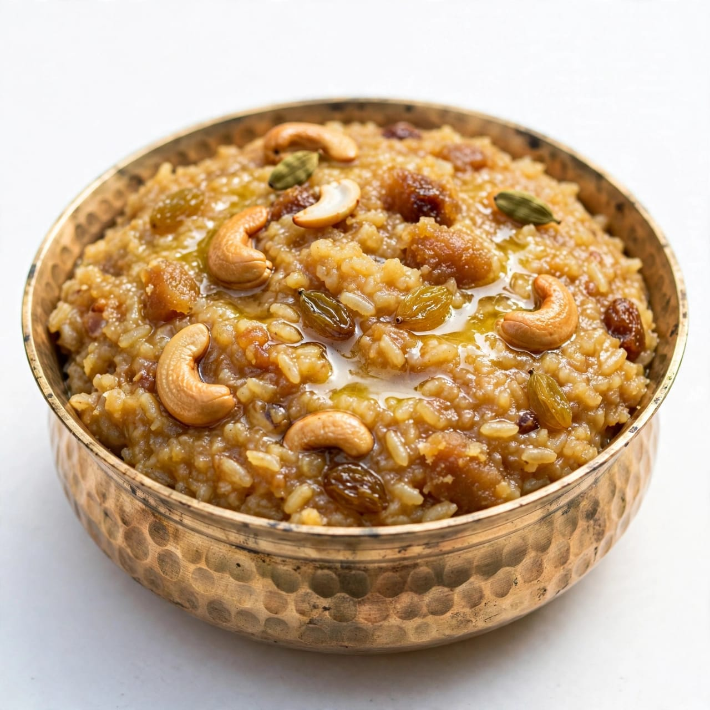
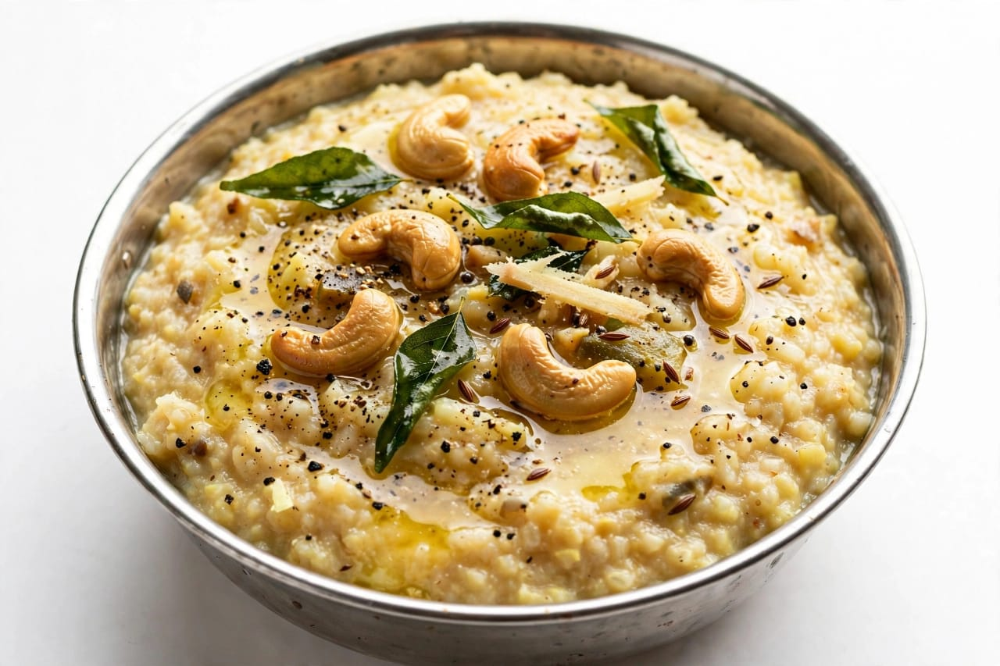
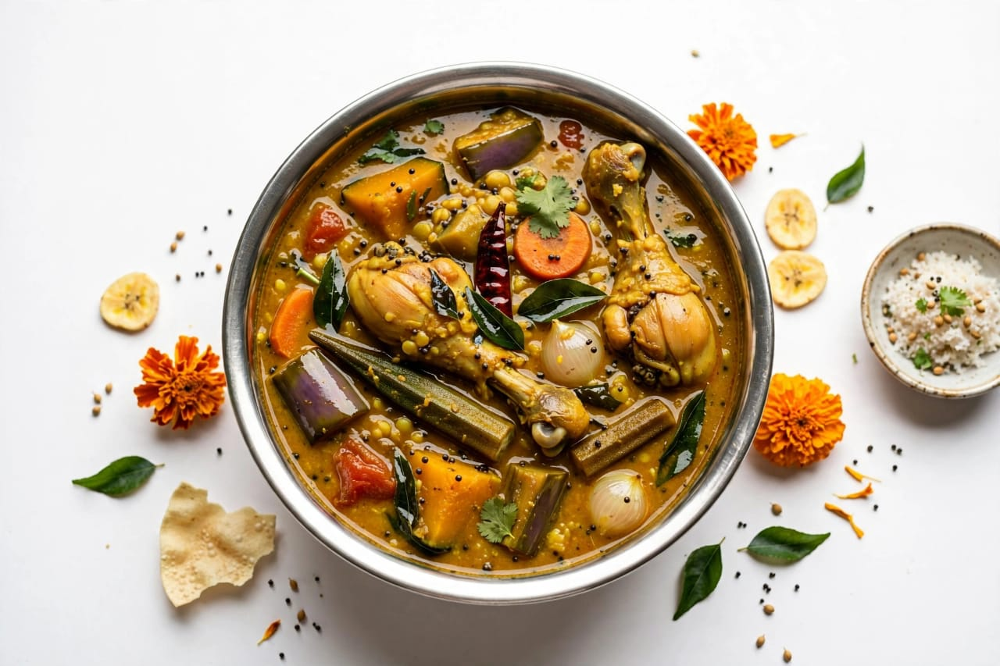

About Pongal
Pongal is an important harvest festival celebrated mainly in Tamil Nadu. It is a traditional festival of thanksgiving. The festival is celebrated to thank nature for a good harvest. Pongal is usually celebrated in the month of January. It is connected with the Tamil month of Thai. The festival is celebrated for several days. Families come together to celebrate Pongal. People clean their homes before the festival. Houses are decorated beautifully. Colourful kolam designs are made in front of homes. Kolam is a traditional decorative design. Fresh rice is used in many Pongal preparations. Farmers have a special connection with the festival. Pongal celebrates the importance of agriculture. People express gratitude to the Sun God. The Sun is important for agriculture and life. Traditional prayers are performed during the festival. The first day is known as Bhogi. Bhogi is associated with cleaning and new beginnings. People remove old unwanted things from their homes. The second day is known as Thai Pongal. Thai Pongal is the main day of celebration. People prepare a special Pongal dish. The dish is cooked using newly harvested rice. Milk and jaggery are commonly added to sweet Pongal. People allow the Pongal dish to boil over. The overflowing dish represents prosperity and abundance. Families offer Pongal to the Sun God. People wear new and traditional clothes. Relatives and friends visit each other. Greetings are exchanged during the festival. Traditional music is enjoyed in many places. Homes are decorated with flowers. Cattle are also important to the festival. Pongal celebrates the relationship between farmers and nature. It also recognizes the contribution of animals to farming. Pongal creates a joyful atmosphere. The festival has great cultural importance. Pongal is celebrated with happiness and gratitude.
Mattu Pongal is the third day of the Pongal celebration. Mattu Pongal is dedicated to cattle. Cows and bulls are respected during this festival. Cattle are traditionally decorated with colourful items. Their horns may be painted and decorated. Special food is prepared for cattle. Farmers express gratitude to their animals. Cattle play an important role in traditional farming. Kaanum Pongal is another important day. It is generally a day for meeting family and friends. People visit relatives during Kaanum Pongal. Families may enjoy outings together. Traditional games and cultural activities are organized. Pongal celebrations can vary from region to region. Villages often have special community celebrations. Traditional sports and events may be organized. Jallikattu is traditionally associated with some Pongal celebrations. It is especially associated with parts of Tamil Nadu. Pongal is also celebrated by Tamil communities outside Tamil Nadu. People living in other countries celebrate the festival too. Traditional food is an important part of Pongal. Sweet Pongal is a famous festive dish. Ven Pongal is another popular dish. Sambar is commonly served with Pongal meals. Coconut chutney is also enjoyed with some dishes. Sugarcane is an important part of Pongal celebrations. Fresh sugarcane is enjoyed by families. Bananas and other fruits may be included in festive meals. People prepare food using traditional methods. Clay pots are traditionally used for cooking Pongal. The Pongal pot is often decorated with turmeric and flowers. People gather around the cooking area. Families celebrate the boiling of the Pongal dish. The festival promotes gratitude towards nature. It reminds people of the importance of farming. Pongal promotes family unity. It strengthens community relationships. The festival brings happiness to rural and urban communities. Pongal is an important symbol of Tamil culture.
Pongal is closely connected with the agricultural cycle. Farmers celebrate after harvesting their crops. The festival gives importance to food and farming. People thank the Sun, rain, land and cattle. Nature is considered an important part of life. Traditional customs are followed by many families. Women often create beautiful kolam designs. Kolam designs may be made using rice flour. Homes are decorated with mango leaves and flowers. Traditional clothes are worn during the celebration. People visit temples and offer prayers. Special cultural programs are held in many places. Families share sweets and food with neighbours. People exchange Pongal greetings. The festival creates a feeling of togetherness. Pongal teaches people to respect nature. It also teaches gratitude for food and hard work. The celebration represents prosperity and happiness. Pongal is a colourful and meaningful harvest festival. It continues to be an important part of Indian culture.
Special Foods

Sweet Pongal
Sweet Pongal is a traditional dish made with rice, jaggery and milk.

Ven Pongal
Ven Pongal is a savoury dish made with rice and lentils.

Sambar
Sambar is a traditional vegetable and lentil dish served with Pongal.